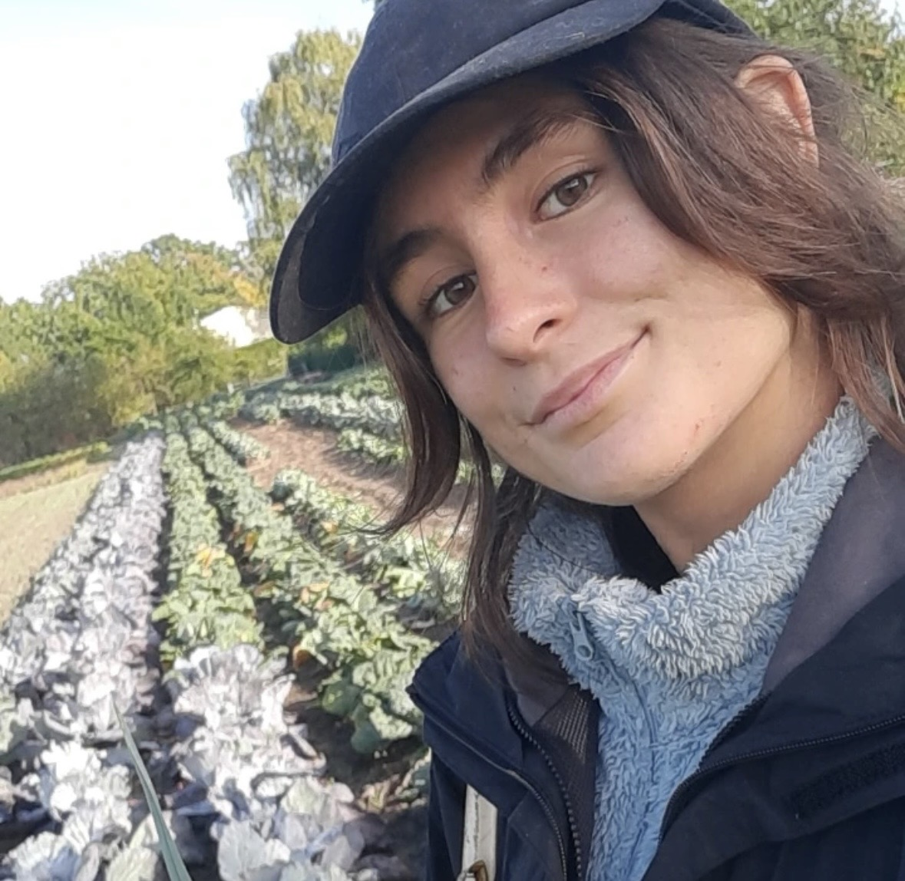
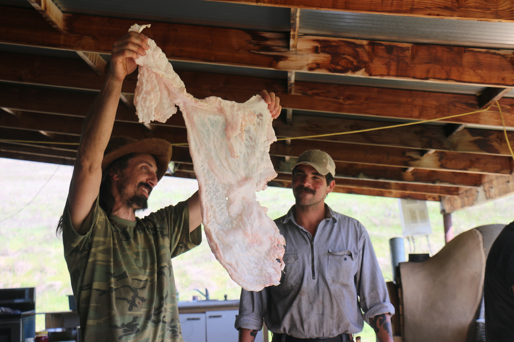

Originally from the Basque Country, I’m a multimedia journalist working around food, land, and the ways people make sense of place through foraging, farming, cooking and gathering.
My work often starts with food and moves outward into stories about climate change, memory, and relationships to land and water, where what we eat becomes a way into how people live and what is changing around them.
I move between documenting these worlds and creating projects that invite people into them. Through my work I aim to support the places and practices that sustain us.
UC Berkeley— expected May 2027
Master of Journalism (Multimedia)
Graduate Certificate in Food Systems
Wageningen University & Research, September 2020— May 2024
BSc Environmental Sciences (Resilient Food Systems)
Contributing photojournalist
Reporter
Newsletter writer
Spanish – Native
Basque – Native
English – Fluent
French – Advanced
Italian – Conversational
